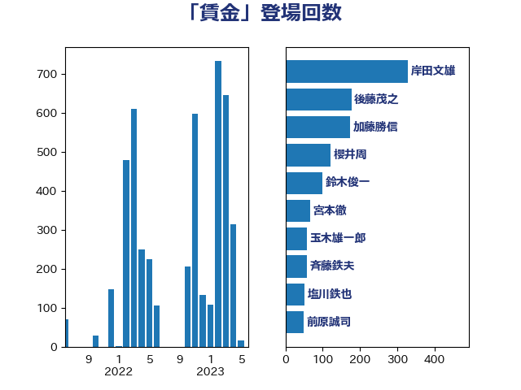

単語「賃金」

| 岸田文雄 | 自由民主党 | 141 回 |
| 後藤茂之 | 自由民主党 | 120 回 |
| 田村憲久 | 自由民主党 | 104 回 |
| 宮本徹 | 日本共産党 | 79 回 |
| 塩川鉄也 | 日本共産党 | 66 回 |
| 福島みずほ | 社会民主党 | 60 回 |
| 麻生太郎 | 自由民主党 | 50 回 |
| 前原誠司 | 国民民主党 | 46 回 |
| 伊波洋一 | 無所属 | 45 回 |
| 藤田文武 | 日本維新の会 | 43 回 |
| 野田聖子 | 自由民主党 | 43 回 |
| 落合貴之 | 立憲民主党 | 41 回 |
| 櫻井周 | 立憲民主党 | 40 回 |
| 田村智子 | 日本共産党 | 38 回 |
| 稲富修二 | 立憲民主党 | 38 回 |
| 足立敏之 | 自由民主党 | 38 回 |
| 西村康稔 | 自由民主党 | 37 回 |
| 玉木雄一郎 | 国民民主党 | 36 回 |
| 鈴木俊一 | 自由民主党 | 36 回 |
| 末松義規 | 立憲民主党 | 30 回 |
| 倉林明子 | 日本共産党 | 29 回 |
| 沢田良 | 日本維新の会 | 29 回 |
| 上田清司 | 国民民主党 | 27 回 |
| 梶山弘志 | 自由民主党 | 27 回 |
| 川田龍平 | 立憲民主党 | 26 回 |
| 菅義偉 | 自由民主党 | 23 回 |
| 斉藤鉄夫 | 公明党 | 22 回 |
| 枝野幸男 | 立憲民主党 | 21 回 |
| 小池晃 | 日本共産党 | 20 回 |
| 山際大志郎 | 自由民主党 | 19 回 |
| 坂本哲志 | 自由民主党 | 18 回 |
| 塩村あやか | 立憲民主党 | 18 回 |
| 森屋隆 | 立憲民主党 | 18 回 |
| 田村まみ | 国民民主党 | 18 回 |
| 高木かおり | 日本維新の会 | 18 回 |
| 山下芳生 | 日本共産党 | 17 回 |
| 山添拓 | 日本共産党 | 17 回 |
| 伊佐進一 | 公明党 | 16 回 |
| 城井崇 | 立憲民主党 | 16 回 |
| 川合孝典 | 国民民主党 | 16 回 |
| 打越さく良 | 立憲民主党 | 16 回 |
| 本村伸子 | 日本共産党 | 16 回 |
| 石橋通宏 | 立憲民主党 | 16 回 |
| 赤嶺政賢 | 日本共産党 | 16 回 |
| 逢坂誠二 | 立憲民主党 | 16 回 |
| 階猛 | 立憲民主党 | 14 回 |
| 小沢雅仁 | 立憲民主党 | 13 回 |
| 岸真紀子 | 立憲民主党 | 13 回 |
| 鈴木義弘 | 国民民主党 | 13 回 |
| 伊藤孝恵 | 国民民主党 | 12 回 |
| 小沼巧 | 立憲民主党 | 12 回 |
| 笠井亮 | 日本共産党 | 12 回 |
| 伊藤岳 | 日本共産党 | 11 回 |
| 福田昭夫 | 立憲民主党 | 11 回 |
| 吉川元 | 立憲民主党 | 10 回 |
| 山本博司 | 公明党 | 10 回 |
| 斎藤アレックス | 国民民主党 | 10 回 |
| 源馬謙太郎 | 立憲民主党 | 10 回 |
| 伊藤渉 | 公明党 | 9 回 |
| 杉久武 | 公明党 | 9 回 |
| 浜口誠 | 国民民主党 | 9 回 |
| 長友慎治 | 国民民主党 | 9 回 |
| 岩渕友 | 日本共産党 | 8 回 |
| 早稲田ゆき | 立憲民主党 | 8 回 |
| 浅田均 | 日本維新の会 | 8 回 |
| 田中健 | 国民民主党 | 8 回 |
| 矢倉克夫 | 公明党 | 8 回 |
| 舟山康江 | 国民民主党 | 8 回 |
| 西田実仁 | 公明党 | 8 回 |
| ながえ孝子 | 無所属 | 7 回 |
| 古賀篤 | 自由民主党 | 7 回 |
| 大塚耕平 | 国民民主党 | 7 回 |
| 櫛渕万里 | れいわ新選組 | 7 回 |
| 水岡俊一 | 立憲民主党 | 7 回 |
| 浅野哲 | 国民民主党 | 7 回 |
| 片山さつき | 自由民主党 | 7 回 |
| 神田潤一 | 自由民主党 | 7 回 |
| 萩生田光一 | 自由民主党 | 7 回 |
| 西岡秀子 | 国民民主党 | 7 回 |
| 世耕弘成 | 自由民主党 | 6 回 |
| 吉良州司 | 無所属 | 6 回 |
| 山井和則 | 立憲民主党 | 6 回 |
| 岡本あき子 | 立憲民主党 | 6 回 |
| 日下正喜 | 公明党 | 6 回 |
| 櫻井充 | 自由民主党 | 6 回 |
| 篠原孝 | 立憲民主党 | 6 回 |
| 西村智奈美 | 立憲民主党 | 6 回 |
| 赤羽一嘉 | 公明党 | 6 回 |
| 道下大樹 | 立憲民主党 | 6 回 |
| 三原じゅん子 | 自由民主党 | 5 回 |
| 志位和夫 | 日本共産党 | 5 回 |
| 東徹 | 日本維新の会 | 5 回 |
| 石垣のりこ | 立憲民主党 | 5 回 |
| 秋野公造 | 公明党 | 5 回 |
| 竹内譲 | 公明党 | 5 回 |
| 青木愛 | 立憲民主党 | 5 回 |
| 高橋千鶴子 | 日本共産党 | 5 回 |
| 中川正春 | 立憲民主党 | 4 回 |
| 井坂信彦 | 立憲民主党 | 4 回 |
| 伊藤俊輔 | 立憲民主党 | 4 回 |
| 古賀之士 | 立憲民主党 | 4 回 |
| 塩田博昭 | 公明党 | 4 回 |
| 大西健介 | 立憲民主党 | 4 回 |
| 奥野総一郎 | 立憲民主党 | 4 回 |
| 岸信夫 | 自由民主党 | 4 回 |
| 平木大作 | 公明党 | 4 回 |
| 杉尾秀哉 | 立憲民主党 | 4 回 |
| 森山浩行 | 立憲民主党 | 4 回 |
| 河西宏一 | 公明党 | 4 回 |
| 深澤陽一 | 自由民主党 | 4 回 |
| 石井啓一 | 公明党 | 4 回 |
| 石井苗子 | 日本維新の会 | 4 回 |
| 礒崎哲史 | 国民民主党 | 4 回 |
| 蓮舫 | 立憲民主党 | 4 回 |
| 角田秀穂 | 公明党 | 4 回 |
| 赤木正幸 | 日本維新の会 | 4 回 |
| 越智隆雄 | 自由民主党 | 4 回 |
| 野間健 | 立憲民主党 | 4 回 |
| 金子恵美 | 立憲民主党 | 4 回 |
| 阿部司 | 日本維新の会 | 4 回 |
| おおつき紅葉 | 立憲民主党 | 3 回 |
| 今枝宗一郎 | 自由民主党 | 3 回 |
| 前川清成 | 日本維新の会 | 3 回 |
| 勝部賢志 | 立憲民主党 | 3 回 |
| 古川元久 | 国民民主党 | 3 回 |
| 吉川赳 | 無所属 | 3 回 |
| 吉田はるみ | 立憲民主党 | 3 回 |
| 吉田忠智 | 立憲民主党 | 3 回 |
| 太田房江 | 自由民主党 | 3 回 |
| 室井邦彦 | 日本維新の会 | 3 回 |
| 山口那津男 | 公明党 | 3 回 |
| 山田勝彦 | 立憲民主党 | 3 回 |
| 岡本三成 | 公明党 | 3 回 |
| 有村治子 | 自由民主党 | 3 回 |
| 柳ヶ瀬裕文 | 日本維新の会 | 3 回 |
| 柴田巧 | 日本維新の会 | 3 回 |
| 江田憲司 | 立憲民主党 | 3 回 |
| 浜地雅一 | 公明党 | 3 回 |
| 片山大介 | 日本維新の会 | 3 回 |
| 牧山ひろえ | 立憲民主党 | 3 回 |
| 田村貴昭 | 日本共産党 | 3 回 |
| 石川博崇 | 公明党 | 3 回 |
| 石川香織 | 立憲民主党 | 3 回 |
| 神津たけし | 立憲民主党 | 3 回 |
| 福山哲郎 | 立憲民主党 | 3 回 |
| 船橋利実 | 自由民主党 | 3 回 |
| 赤澤亮正 | 自由民主党 | 3 回 |
| 辻元清美 | 立憲民主党 | 3 回 |
| 金村龍那 | 日本維新の会 | 3 回 |
| 長妻昭 | 立憲民主党 | 3 回 |
| 高階恵美子 | 自由民主党 | 3 回 |
| たがや亮 | れいわ新選組 | 2 回 |
| 上川陽子 | 自由民主党 | 2 回 |
| 下条みつ | 立憲民主党 | 2 回 |
| 中野洋昌 | 公明党 | 2 回 |
| 井林辰憲 | 自由民主党 | 2 回 |
| 今井絵理子 | 自由民主党 | 2 回 |
| 佐藤英道 | 公明党 | 2 回 |
| 古川禎久 | 自由民主党 | 2 回 |
| 吉田久美子 | 公明党 | 2 回 |
| 土田慎 | 自由民主党 | 2 回 |
| 堀場幸子 | 日本維新の会 | 2 回 |
| 大石あきこ | れいわ新選組 | 2 回 |
| 宮本周司 | 自由民主党 | 2 回 |
| 小宮山泰子 | 立憲民主党 | 2 回 |
| 小田原潔 | 自由民主党 | 2 回 |
| 山下貴司 | 自由民主党 | 2 回 |
| 山本剛正 | 日本維新の会 | 2 回 |
| 市村浩一郎 | 日本維新の会 | 2 回 |
| 後藤祐一 | 立憲民主党 | 2 回 |
| 末松信介 | 自由民主党 | 2 回 |
| 松山政司 | 自由民主党 | 2 回 |
| 梅村聡 | 日本維新の会 | 2 回 |
| 森本真治 | 立憲民主党 | 2 回 |
| 森田俊和 | 立憲民主党 | 2 回 |
| 櫻田義孝 | 自由民主党 | 2 回 |
| 武田良太 | 自由民主党 | 2 回 |
| 河野太郎 | 自由民主党 | 2 回 |
| 渡辺猛之 | 自由民主党 | 2 回 |
| 田名部匡代 | 立憲民主党 | 2 回 |
| 田島麻衣子 | 立憲民主党 | 2 回 |
| 田畑裕明 | 自由民主党 | 2 回 |
| 田野瀬太道 | 無所属 | 2 回 |
| 白石洋一 | 立憲民主党 | 2 回 |
| 石川昭政 | 自由民主党 | 2 回 |
| 緑川貴士 | 立憲民主党 | 2 回 |
| 自見はなこ | 自由民主党 | 2 回 |
| 舞立昇治 | 自由民主党 | 2 回 |
| 芳賀道也 | 国民民主党 | 2 回 |
| 輿水恵一 | 公明党 | 2 回 |
| 里見隆治 | 公明党 | 2 回 |
| 野田佳彦 | 立憲民主党 | 2 回 |
| 音喜多駿 | 日本維新の会 | 2 回 |
| 馬場伸幸 | 日本維新の会 | 2 回 |
| 上野賢一郎 | 自由民主党 | 1 回 |
| 上野通子 | 自由民主党 | 1 回 |
| 中司宏 | 日本維新の会 | 1 回 |
| 中谷真一 | 自由民主党 | 1 回 |
| 井上哲士 | 日本共産党 | 1 回 |
| 伊藤孝江 | 公明党 | 1 回 |
| 伴野豊 | 立憲民主党 | 1 回 |
| 佐々木紀 | 自由民主党 | 1 回 |
| 古屋範子 | 公明党 | 1 回 |
| 吉田統彦 | 立憲民主党 | 1 回 |
| 吉田豊史 | 日本維新の会 | 1 回 |
| 和田政宗 | 自由民主党 | 1 回 |
| 和田義明 | 自由民主党 | 1 回 |
| 嘉田由紀子 | 無所属 | 1 回 |
| 堂故茂 | 自由民主党 | 1 回 |
| 堤かなめ | 立憲民主党 | 1 回 |
| 宮本岳志 | 日本共産党 | 1 回 |
| 宮路拓馬 | 自由民主党 | 1 回 |
| 寺田学 | 立憲民主党 | 1 回 |
| 小山展弘 | 立憲民主党 | 1 回 |
| 小森卓郎 | 自由民主党 | 1 回 |
| 小野田紀美 | 自由民主党 | 1 回 |
| 山本太郎 | れいわ新選組 | 1 回 |
| 山本順三 | 自由民主党 | 1 回 |
| 岩谷良平 | 日本維新の会 | 1 回 |
| 岬麻紀 | 日本維新の会 | 1 回 |
| 掘井健智 | 日本維新の会 | 1 回 |
| 新谷正義 | 自由民主党 | 1 回 |
| 末次精一 | 立憲民主党 | 1 回 |
| 柳本顕 | 自由民主党 | 1 回 |
| 根本匠 | 自由民主党 | 1 回 |
| 梅村みずほ | 日本維新の会 | 1 回 |
| 榛葉賀津也 | 国民民主党 | 1 回 |
| 池下卓 | 日本維新の会 | 1 回 |
| 泉健太 | 立憲民主党 | 1 回 |
| 浦野靖人 | 日本維新の会 | 1 回 |
| 海江田万里 | 立憲民主党 | 1 回 |
| 清水真人 | 自由民主党 | 1 回 |
| 牧原秀樹 | 自由民主党 | 1 回 |
| 神谷裕 | 立憲民主党 | 1 回 |
| 福田達夫 | 自由民主党 | 1 回 |
| 稲津久 | 公明党 | 1 回 |
| 空本誠喜 | 日本維新の会 | 1 回 |
| 竹谷とし子 | 公明党 | 1 回 |
| 羽田次郎 | 立憲民主党 | 1 回 |
| 舩後靖彦 | れいわ新選組 | 1 回 |
| 茂木敏充 | 自由民主党 | 1 回 |
| 西銘恒三郎 | 自由民主党 | 1 回 |
| 谷川とむ | 自由民主党 | 1 回 |
| 赤池誠章 | 自由民主党 | 1 回 |
| 野田国義 | 立憲民主党 | 1 回 |
| 鈴木敦 | 国民民主党 | 1 回 |
| 鎌田さゆり | 立憲民主党 | 1 回 |
| 長谷川岳 | 自由民主党 | 1 回 |
| 門山宏哲 | 自由民主党 | 1 回 |
| 青柳陽一郎 | 立憲民主党 | 1 回 |
| 高橋英明 | 日本維新の会 | 1 回 |
| 高良鉄美 | 無所属 | 1 回 |
| 高野光二郎 | 自由民主党 | 1 回 |